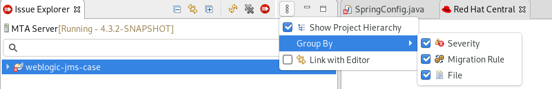
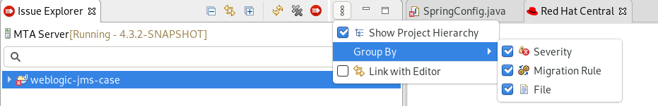

Eclipse and Red Hat CodeReady Studio Guide
Making open source more inclusive
Red Hat is committed to replacing problematic language in our code, documentation, and web properties. We are beginning with these four terms: master, slave, blacklist, and whitelist. Because of the enormity of this endeavor, these changes will be implemented gradually over several upcoming releases. For more details, see our CTO Chris Wright’s message.
1. Introduction
1.1. About the MTA plugin for Eclipse and Red Hat CodeReady Studio
The Migration Toolkit for Applications (MTA) plugin for Eclipse and Red Hat CodeReady Studio helps you migrate and modernize applications.
The MTA plugin analyzes your projects using customizable rulesets, marks migration issues in the source code, provides guidance to fix the issues, and offers automatic code replacement, or Quick Fixes, if possible.
For information about a similar extension for Visual Studio Code, see the Visual Studio Code Extension Guide.
1.2. About the Migration Toolkit for Applications
What is the Migration Toolkit for Applications?
The Migration Toolkit for Applications (MTA) is an extensible and customizable rule-based tool that simplifies the migration and modernization of Java applications.
MTA examines application artifacts, including project source directories and application archives, and then produces an HTML report highlighting areas needing changes. MTA supports many migration paths including the following examples:
-
Upgrading to the latest release of Red Hat JBoss Enterprise Application Platform
-
Migrating from Oracle WebLogic or IBM WebSphere Application Server to Red Hat JBoss Enterprise Application Platform
-
Containerizing applications and making them cloud-ready
-
Migrating from Java Spring Boot to Quarkus
-
Updating from Oracle JDK to OpenJDK
For more information about use cases and migration paths, see the MTA for developers web page.
How does the Migration Toolkit for Applications simplify migration?
The Migration Toolkit for Applications looks for common resources and known trouble spots when migrating applications. It provides a high-level view of the technologies used by the application.
MTA generates a detailed report evaluating a migration or modernization path. This report can help you to estimate the effort required for large-scale projects and to reduce the work involved.
How do I learn more?
See the Introduction to the Migration Toolkit for Applications to learn more about the features, supported configurations, system requirements, and available tools in the Migration Toolkit for Applications.
2. Installing the MTA plugin
You can install the MTA plugin in a connected or a restricted network environment.
2.1. Installing in a connected environment
You can install the MTA plugin in a connected environment.
The MTA plugin has been tested with the Eclipse IDE for Java Enterprise Developers 2021-09 and Red Hat CodeReady Studio 12.21.0.GA.
Prerequisites
-
Java Development Kit (JDK) installed. MTA supports the following JDKs:
-
OpenJDK 1.8
-
OpenJDK 11
-
Oracle JDK 1.8
-
Oracle JDK 11
-
-
8 GB RAM
-
If you are installing on macOS, the value of
maxprocmust be2048or greater.
-
Red Hat CodeReady Studio or Eclipse IDE for Java Enterprise Developers 2021-09
-
JBoss Tools, installed with the Eclipse Marketplace Client
-
Mylyn SDK and frameworks, installed with Eclipse
-
Launch Eclipse or CodeReady Studio.
-
From the menu bar, select Help → Install New Software.
-
Next to the Work with field, click Add.
-
In the Name field, enter
MTA. -
In the Location field, enter
http://download.jboss.org/jbosstools/photon/stable/updates/mta/and click OK. -
Select all the JBoss Tools - MTA check boxes and click Next.
-
Review the installation details and click Next.
-
Accept the terms of the license agreement and click Finish.
-
Restart Eclipse or CodeReady Studio.
2.2. Installing in a disconnected environment
You can install the MTA plugin in a disconnected network environment.
The MTA plugin has been tested with the Eclipse IDE for Java Enterprise Developers 2021-09 and Red Hat CodeReady Studio 12.21.0.GA.
Prerequisites
-
Java Development Kit (JDK) installed. MTA supports the following JDKs:
-
OpenJDK 1.8
-
OpenJDK 11
-
Oracle JDK 1.8
-
Oracle JDK 11
-
-
8 GB RAM
-
If you are installing on macOS, the value of
maxprocmust be2048or greater.
-
Red Hat CodeReady Studio or Eclipse IDE for Java Enterprise Developers 2021-09
-
JBoss Tools, installed with the Eclipse Marketplace Client
-
Mylyn SDK and frameworks, installed with Eclipse
-
Connected workstation for all downloads
-
On a computer with network access, navigate to the Migration Toolkit for Applications download site and download the
migrationtoolkit-mta-eclipse-plugin-repositoryfile. -
Launch Eclipse or CodeReady Studio.
-
From the menu bar, select Help → Install New Software.
-
Next to the Work with field, click Add.
-
In the Name field, enter
MTA. -
Next to the Location field, click Archive.
-
Select the
migrationtoolkit-mta-eclipse-plugin-repositoryfile and click OK. -
Select all the JBoss Tools - MTA check boxes and click Next.
-
Review the installation details and click Next.
-
Accept the terms of the license agreement and click Finish.
-
Restart Eclipse or CodeReady Studio.
2.3. Accessing the MTA tools
You can access the MTA plugin tools in the MTA perspective.
-
You must restart the Eclipse IDE or Red Hat CodeReady Studio after installing the MTA plugin.
-
Click Window → Perspective → Open Perspective → Other.
-
Select MTA and click OK.
The following components are displayed:
-
Issue Explorer displays the migration issues identified by the MTA plugin.
-
MTA Server is a separate process that analyzes projects, flags migration issues, and generates reports.
You can start, stop, and view the status of the MTA server in the Issue Explorer.
-
Issue Details displays detailed information about a selected issue, including the hint, severity, and any additional resources.
-
MTA Report is an HTML report generated by the MTA plugin. From the report landing page you can navigate to detailed reports, such as Application Details, Issues, and Dependencies.
NoteThe report is not generated by default. You must select the Generate Report option in the run configuration.
-
3. Analyzing your projects with the MTA plugin
You can analyze your projects with the MTA plugin by creating a run configuration, running an analysis, and then reviewing and resolving migration issues detected by the MTA plugin.
3.1. Creating a run configuration
You can create a run configuration in the Issue Explorer. A run configuration specifies the project to analyze, migration path, and additional options.
You can create multiple run configurations. Each run configuration must have a unique name.
-
You must import your projects into the Eclipse IDE or CodeReady Studio.
-
In the Issue Explorer, click the MTA icon () to create a run configuration.
-
On the Input tab, complete the following fields:
-
Select a migration path.
-
Beside the Projects field, click Add and select one or more projects.
-
Beside the Packages field, click Add and select one or more the packages.
NoteSpecifying the packages for analysis reduces the run time. If you do not select any packages, all packages in the project are scanned.
-
-
On the Options tab, you can select Generate Report to generate an HTML report. The report is displayed in the Report tab and saved as a file.
Other options are displayed. See MTA Command-line Arguments in the CLI Guide for details.
-
On the Rules tab, you can select custom rulesets that you have imported or created for the MTA plugin.
-
Click Run to start the analysis.
3.2. Analyzing projects
You can analyze your projects by running the MTA plugin with a saved run configuration.
-
In the MTA perspective, click the Run button (
 ) and select a run configuration.
) and select a run configuration.The MTA plugin analyzes your projects. The Issue Explorer displays migration issues that are detected with the ruleset.
-
When you have finished analyzing your projects, stop the MTA server in the Issue Explorer to conserve memory.
3.3. Reviewing issues
You can review issues identified by the MTA plugin.
-
Click Window → Show View → Issue Explorer.
-
Optional: Filter the issues by clicking the Options menu
 , selecting Group By and an option.
, selecting Group By and an option. -
Right-click and select Issue Details to view information about the issue, including its severity and how to address it.
The following icons indicate the severity and state of an issue:
Table 1. Issue icons Icon Description 
The issue must be fixed for a successful migration.

The issue is optional to fix for migration.

The issue might need to be addressed during migration.

The issue was resolved.

The issue is stale. The code marked as an issue was modified since the last time that MTA identified it as an issue.

A quick fix is available for this issue, which is mandatory to fix for a successful migration.

A quick fix is available for this issue, which is optional to fix for migration.

A quick fix is available for this issue, which may potentially be an issue during migration.
-
Double-click an issue to open the associated line of code in an editor.
3.4. Resolving issues
You can resolve issues detected by the MTA plugin by performing one of the following actions:
-
You can double-click the issue to open it in an editor and edit the source code.
The issue displays a Stale icon (
) until the next time you run the MTA plugin. -
You can right-click the issue and select Mark as Fixed.
-
If the issue displays a Quick Fix icon (
), you can right-click the issue and select Preview Quick Fix and then Apply Quick Fix.
4. Managing rules
The MTA plugin comes with a core set of System rules for analyzing projects and identifying migration and modernization issues.
You can create and import custom rulesets.
4.1. Viewing rules
You can view system and custom rules, if any, for the MTA plugin.
-
To view system rules, the MTA server must be running.
-
Click the Rulesets tab.
-
Expand System to view system rulesets or Custom to view custom rulesets.
-
Expand a ruleset.
-
Double-click a rule to open it in a viewer.
-
Click the Source tab to view the XML source of the rule.
4.2. Creating a custom ruleset
You can create a custom ruleset in the MTA perspective.
See the Rules Development Guide to learn more about creating custom XML rules.
-
Click the Rulesets tab.
-
Click the Create Ruleset icon (
 ).
). -
Select a project and a directory for the ruleset.
-
Enter the file name.
NoteThe file must have the extension
.windup.xmlor.mta.xml. -
Enter a ruleset ID, for example,
my-ruleset-id. -
Optional: Select Generate quickstart template to add basic rule templates to the file.
-
Click Finish.
-
The ruleset file opens in an editor and you can add and edit rules in the file.
-
Click the Source tab to edit the XML source of the ruleset file.
You can select the new ruleset when you create a run configuration.
4.3. Importing a custom ruleset
You can import a custom ruleset into the MTA plugin to analyze your projects.
-
Custom ruleset file with a
.windup.xmlor.mta.xmlextension.See the Rules Development Guide for information about creating rulesets.
-
Click the Rulesets tab.
-
Click the Import Ruleset icon (
 ).
). -
Browse to and select the XML rule file to import.
The custom ruleset is displayed when you expand Custom on the Rulesets tab.
4.4. Submitting a custom ruleset
You can submit your custom ruleset for inclusion in the official MTA rule repository. This allows your custom rules to be reviewed and included in subsequent releases of MTA.
-
Click the Rulesets tab.
-
Click the Arrow icon (
 ) and select Submit Ruleset.
) and select Submit Ruleset. -
Complete the following fields:
-
Summary: Describe the purpose of the rule. This becomes the title of the submission.
-
Code Sample: Enter an example of the source code that the rule should run against.
-
Description: Enter a brief description of the rule.
-
-
Click Choose Files and select the ruleset file.
-
Click Submit.